DES（Data Encryption Standard）是一种对称加密算法，由IBM研发，分组加密（将密码分组进行加密），64位密钥，56位为运算，8位校验。（8，16，24，32，40，48，56，64）
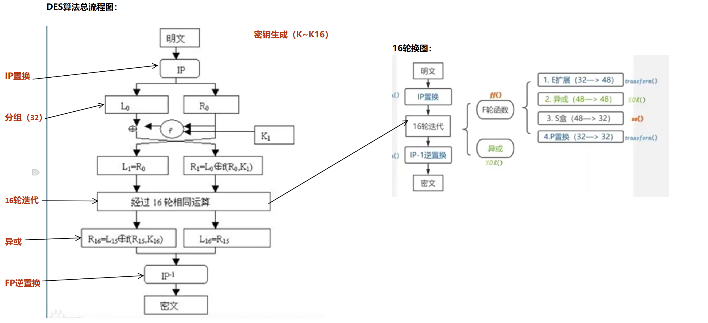IP初始置换
首先，我们从IP置换开始，按照初始置换置换表中，每个格子的数字对应的原始数据表格的位置，置换到该数字所在的方格 （也就是如：在原始数据中第58个位置的二进制数，置换到第一个格子，也就是置换后的表。58_0—1，50_0—2，42_0—3…以此类推， 其中58是初始置换置换表的第一个格子的数，0是原始数据中的58个格子的数，1是修改后的所在格子）
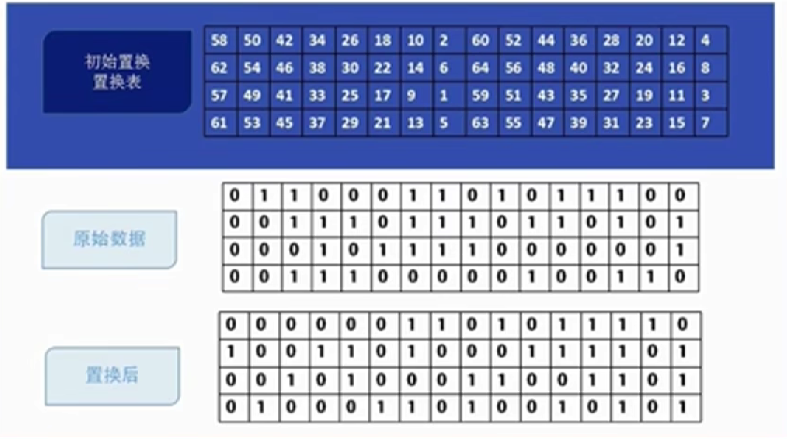其次，就是将置换后的64位数据进行分组为L0(32)和R0(32)，并生成密钥K1（密钥生成），将R0的数据赋值给L1，同时将R0和K1进行E扩展、 异或、S盒置换、P盒置换，生成轮密钥/子密钥，重复16轮（同时生成16个K，下述讲解）。
16轮函数
E扩展：将32位二进制对应的格子数进行扩展，如32、01、02、03、04、05（其规律就是在一组4位的前后添加连续的数字，01前是32，32后是01）
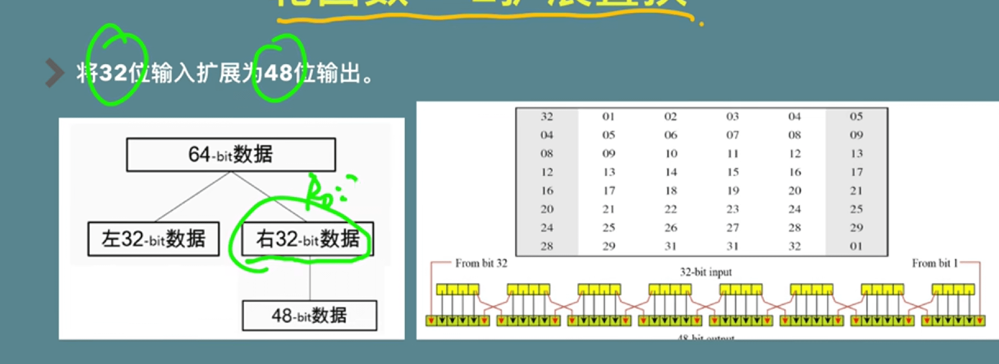 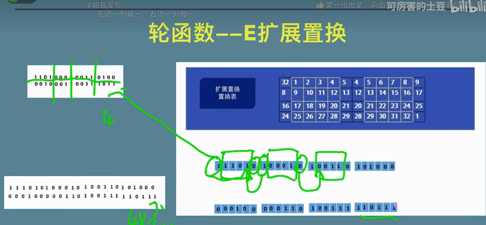异或：当前轮次的子密钥Ki与拓展的48位E扩展结果进行异或运算。运算结果会作为接下来S盒替换的输入
S盒（根据此表置换）：S盒也是一种置换表。在DES的每一轮计算中S盒都是不一样的。 这里我以第一轮计算中的S盒为例。从下图中我们看到，S盒内部有8个S块，记作S1-S8。 每个S块都会接收6位字符作为输入并输出四位字符。这里我们以第一个S盒S1为例。
输入101010到S1中。S1会将这六位的第一位和第六位拿出来10作为S1的行，中间四位0101拿出来作为S1的列。 我们转换成十进制，此时映射到这个S盒的位置就是(2,5)对应S盒的第3行第6列（索引都从0开始数）。 将6转化为二进制，结果就为：S1(101010)=0110
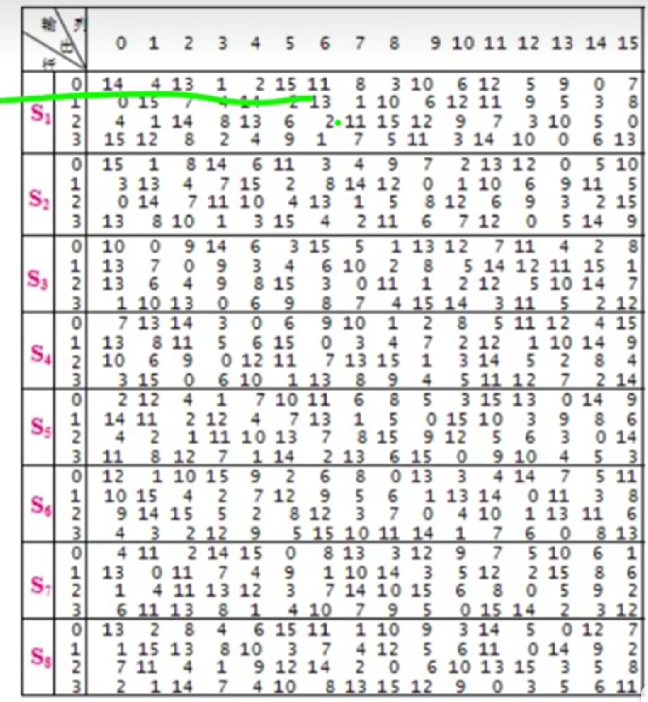 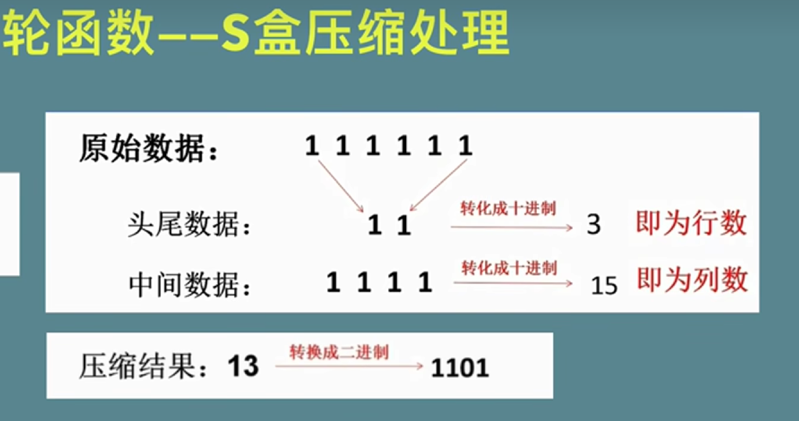P盒置换：P盒置换就是将S盒置换的32位输出作为输入，经过下图固定的替换表进行替换后即为最后F轮函数的结果。
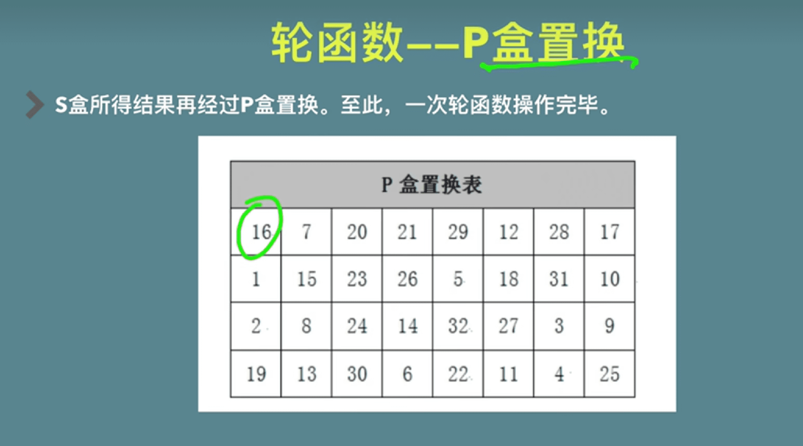Ki密钥的生成
DES算法采用了每轮子密钥生成的方式来增加密钥的复杂性和安全性。 每轮子密钥都是由主密钥（64位）通过密钥调度算法（Key Schedule Algorithm）生成的。 DES算法的密钥调度算法可以将64位的主密钥分成16个子密钥，每个子密钥48位，用于每轮加密中与输入数据进行异或运算。 通过子密钥生成的流程图来看下整个过程。
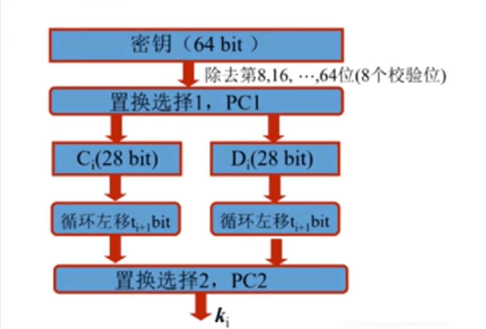1、将64位主密钥经过置换选择1（Permuted Choice 1简写为PC-1）后输出了56位，将其分为左右两个28位的数据块，分别记为C0和D0。 同上面我们讲过的置换规则一样，PC-1置换函数也是一个固定的置换表（下图）。
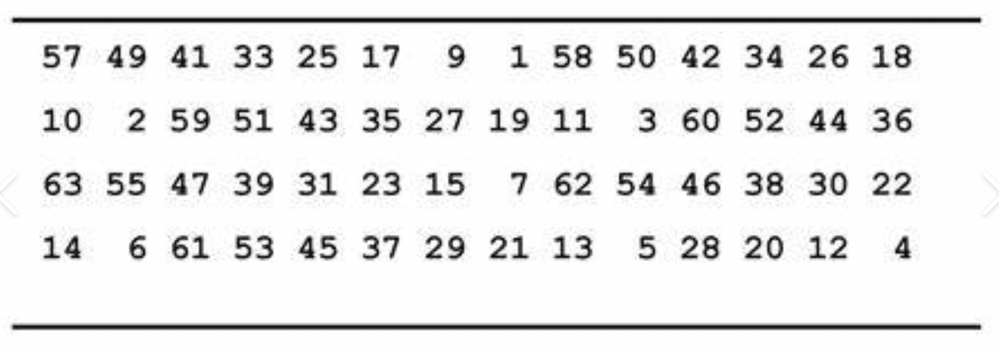2、对C0和D0进行循环左移操作。循环左移完成后生成C1和D1。因此，在16个轮次的计算当中会得到16个32位的数据块C1-C16和D1-D16。在DES中循环左移也有固定的规则。
i=1，2，…，16，对于Ci和Di，当i为1、2、9或16，则循环左移一位，否则循环左移两位。
DES算法详解--2024.9.26
3、 对于C1，D1，将它们经过置换选择2（Permuted Choice 2 简写位PC-2）后，得到48位的子密钥K1， 用于每轮加密中与输入数据进行异或运算。PC-2置换的输入是由PC-1置换生成的56位的密钥，而它的输出是48位的子密钥。 PC-2置换将56位的密钥重新排列，丢弃了8位并选取（注意，是选取！而不是丢弃）了其中的48位作为子密钥。PC-2的置换规则如下（每次输入的值都是轮换后经过左移操作的表， 经过PC-2后是不一样的，所以PC-2并非随机表，而是固定的）：
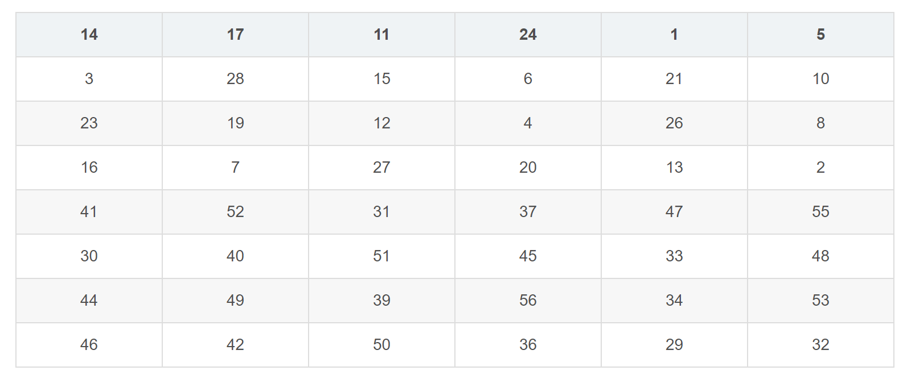即PC-2置换表的第一行表示选择了输入密钥中的第14、17、11、24、1和5位，并将它们作为输出子密钥的前6位。以此类推…
4、至此，经过PC-2后的结果就是我们当前轮次的子密钥K1了。在整个DES加密过程中会生成16个48位子密钥K1-K16， 分别用于DES算法中的16轮加密过程，从而保证每轮加密所使用的密钥都是不同的，增加了破解的难度。
逆置换
经过初始置换、16轮函数后，再经过逆置换，DES算法就大功告成（具体下图，操作参考初始置换）：
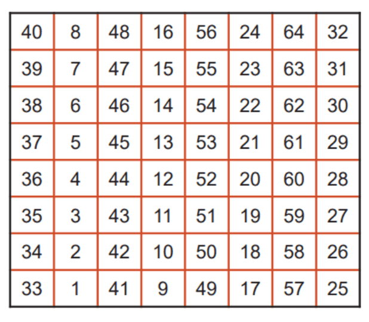
code C {
include "stdio.h"
int main(){
printf("菜就多练！");
}
}